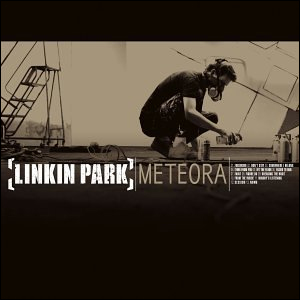

Meteora
Album lanzado el 25 de marzo de 2003 Warner Bros. Records
La banda estaunidense anunci� la producci�n de un nuevo �lbum de estudio en
diciembre de (2001) y revela su nuevo trabajo, habiendo sido inspirados por
la regi�n rocosa de Meteora en Grecia donde se han construido numerosos
monasterios encima de las piedras. Meteora nuevamente agrado a sus fans con su
rapcore y n�-metal, como pudimos escuchar en su anterior disco Hybrid Theory,
pero con la incorporaci�n de nuevos y novedosos instrumentos, como un Shakuhashi
(una flauta japonesa hecha de bamb�) y nuevos efectos de sonido. Tambi�n es
interesante saber que la sincronizaci�n de las canciones del �lbum se da en casi
todo el disco.
El productor del �lbum Meteora fue una vez m�s Don Gilmore. La banda estaunidense
trabaj� casi todo el a�o (2002) en el �lbum, hasta acabar en diciembre. El segundo
�lbum de Linkin Park se lanz� mundialmente el 25 de marzo de 2003. El d�a de su
debut gan� un reconocimiento mundial, ya que fue n�mero 1 en Estados Unidos y Reino
Unido y n�mero 2 en Australia. La banda vendi� m�s de 800.000 copias en la primera
semana. En octubre de 2003 la venta fue muy buena, casi 3 millones de copias.
Este �lbum fue un �xito de ventas, aunque la banda recibi� fuertes cr�ticas.

Linkin Park hizo una nuevamente una nueva gira llamada "Projekt Revolution",
invitaron a artistas como Mudvayne, Blindside y X Zibit. Tambi�n en el a�o 2003 el
grupo Metallica invit� a Linkin Park junto a Limp Bizkit, Mudvayne y Deftones a
participar en el Summer Sanitarium Tour 2003. Linkin Park lanz� en ese mismo a�o
un �lbum que conten�a un CD y un DVD, el t�tuo fue "Live in Texas" que recopilaba
2 actuaciones que tuvo Linkin Park en el estado de Texas. En el a�o 2004 la banda
hizo nuevamente una gira mundial llamada "Meteora World Tour". El 29 de junio de
ese mismo a�o la banda lanz� un nuevo disco: Meteora Tour Edition, que contiene las
canciones de Meteora en versiones en vivo que se publicaron mundialmente en el
Meteora World Tour. El 30 de Noviembre de 2004, Linkin Park y Jay-Z lanzaron su
�lbum Collision Course en el que se muestran mezclas de las canciones de ambos
grupos, como por ejemplo Numb/Encore o Dirt Off Your Shoulder/Lying From You.
| # | T�tulo | Duraci�n |
|---|---|---|
| 1. | "Foreword" (intro) | 0:13 |
| 2. | "Don't Stay" | 3:07 |
| 3. | "Somewhere I Belong" | 3:33 |
| 4. | "Lying From You" | 2:55 |
| 5. | "Hit The Floor" | 2:44 |
| 6. | "Easier To Run" | 3:24 |
| 7. | "Faint" | 2:42 |
| 8. | "Figure 0.9" | 3:17 |
| 9. | "Breaking The Habit" | 3:16 |
| 10. | "From The Inside" | 2:55 |
| 11. | "Nobody's Listening" | 2:58 |
| 12. | "Session" | 2:23 |
| 13. | "Numb" | 3:06 |

En el a�o 2003 alcanzo la primera posiciones en Rock moderno segun The Billboard.
La presencia de la banda se hace cada vez mas fuerte es por eso que fueron invitados junto con otras bandas a tocar en la inaguracion del superbowl.
Copyright � 2009 All Rights Reserved. Please read the privacy-policy and Terms of Use